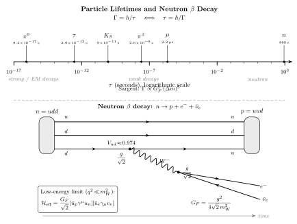

衰变率 $\Gamma$ 与寿命的关系?
站在一桶超冷中子旁边, 时间从零开始数. 一分钟过去, 桶里剩 $e^{-60/880}\approx 93\%$ 的中子; 十分钟过去, 剩 $\approx 50\%$; 一小时过去, 剩 $\approx 1.6\%$. 每个中子都在做同一件事: 以某个小概率 $\Gamma\,\mathrm dt$ 在每个瞬间衰变成一个质子 + 一个电子 + 一个反中微子. 这件事的数字比任何原子的电子跃迁都干净 — 没有热力学涨落, 没有相互作用背景, 一个中子就一个固定的寿命 $\tau_n$. 但这个 $880\,\mathrm s$ 不是随便挑的数: 它是 Fermi 在 1933 年提出的 $\beta$ 衰变四费米子相互作用的直接预言. 如果把这条历史链一路推下去, $\tau_n$ 就与 $G_F$ (Fermi 常数)、 $m_e$ (电子质量)、 $\Delta m=m_n-m_p$ (核子质量差) 这三样东西死死绑在一起. 本节要做的是: 把 "衰变率" 这件事从经典观察出发, 一路推到 Sargent 的 $\Gamma \propto G_F^2 m^5$, 并代入真实数字检验.
一、$\Gamma=\hbar/\tau$: 不稳定态的基本关系
先把问题摆清楚. 一个不稳定粒子是什么? 它不是 Hamiltonian 的一个严格本征态 — 严格本征态的概率随时间不变. 不稳定态是 Hamiltonian 的一个准本征态, 能量带一个小虚部 $E-i\Gamma/2$. 量子力学的标准结果是: 这样的态概率幅随时间演化为 $\psi(t)=\psi(0)\,e^{-iEt/\hbar}\,e^{-\Gamma t/(2\hbar)}$, 存活概率 $$P(t)=|\psi(t)|^2=e^{-\Gamma t/\hbar}\equiv e^{-t/\tau},\qquad \tau\equiv \frac{\hbar}{\Gamma}. \tag{1}$$ $\Gamma$ 是衰变率 (每秒钟衰变的概率), 量纲是能量, 对应的寿命 $\tau$ 量纲是时间. $\hbar=6.58\times 10^{-25}\,\mathrm{GeV\cdot s}$ 是这两个量的换算系数. 把一个量级感塞进脑子: $\Gamma=1\,\mathrm{eV}$ 对应 $\tau=\hbar/\Gamma\approx 6.6\times 10^{-16}\,\mathrm s\approx 0.66\,\mathrm{fs}$; $\Gamma=1\,\mathrm{GeV}$ 对应 $\tau\approx 6.6\times 10^{-25}\,\mathrm s$; 反过来 $\tau=1\,\mathrm{s}$ 对应 $\Gamma\approx 6.6\times 10^{-25}\,\mathrm{GeV}$, 小到无法直接测到共振宽度, 只能数衰变事件.
在量子场论里, 对应的微观定义是 Fermi's golden rule 推广到相对论框架: 对一个初态为静止粒子 $X$、末态为 $n$ 个粒子的衰变, 衰变率由矩阵元模方对 Lorentz 不变末态相空间 (LIPS) 的积分给出: $$\Gamma(X\to f)=\frac{1}{2m_X}\int |\mathcal M|^2\,\mathrm d\Pi_n,\qquad \mathrm d\Pi_n=(2\pi)^4\delta^4\Big(P_X-\sum_i p_i\Big)\prod_{i=1}^n\frac{\mathrm d^3 p_i}{(2\pi)^3\,2E_i}. \tag{2}$$ 前因子 $1/(2m_X)$ 是初态的 Lorentz 不变归一化 (与截面公式里的 $1/(4E_1 E_2 v)$ 同源). 四动量守恒 $\delta$ 函数把 $4n$ 个末态四动量分量缩到 $4n-4$ 个独立变量. 末态粒子数 $n$ 越多, 积分自由度越多, $\Gamma$ 原则上可以有复杂的函数依赖 — 但很多时候主要结构可以通过纯相空间体积和矩阵元的能标依赖看出来, 这就是所谓的维度计数 (dimensional analysis).
把 $\Gamma$ 理解成"每秒衰变概率"就马上引出多通道叠加. 如果一个粒子有多个末态 (例如 $\mu^-\to e^-\nu_\mu\bar\nu_e$ 是主渠道, 但也有 $\mu^-\to e^-\nu_\mu\bar\nu_e \gamma$ 辐射修正渠道), 每个渠道独立贡献一份衰变率, 总衰变率就是相加: $\Gamma_{\mathrm{tot}}=\sum_i \Gamma_i$, 寿命由总衰变率定 $\tau=\hbar/\Gamma_{\mathrm{tot}}$. 分支比 $BR_i=\Gamma_i/\Gamma_{\mathrm{tot}}$ 是实验上最常测的量 — 例如 $K_S\to \pi^+\pi^-$ 的 $BR$ 是 $69.2\%$, $K_S\to \pi^0\pi^0$ 是 $30.7\%$, 剩下的分摊到所有更稀有的渠道. 分支比满足 $\sum_i BR_i=1$, 这是归一条件.
二、deepdive: Sargent 规律 $\Gamma_n\propto G_F^2\Delta m^5$ 的严格推导
现在来硬推. 命题是: 自由中子衰变 $n\to p+e^-+\bar\nu_e$ 的宽度, 在 $\Delta m\equiv m_n-m_p\ll m_n$ 的近似下, 满足 Sargent 五次方规律 — 总宽度与 $\Delta m$ 的五次方成正比. 历史上 Sargent 1933 年 (几乎与 Fermi 同年) 实验上从若干 $\beta$ 发射体的经验拟合里发现这件事, 然后 Fermi 的理论把这个 $\Delta m^5$ 从四费米子相互作用里推导出来 — 这是弱相互作用史上最干净的一次理论-实验对接. 推导分三步.
(A) 有效哈密顿量. V–A 理论 (Sudarshan-Marshak 1957, Feynman-Gell-Mann 1957) 给中子 $\beta$ 衰变的低能有效相互作用是四费米子算符 $$\mathcal H_{\mathrm{V-A}}=\frac{G_F}{\sqrt 2}\,[\bar u_p\gamma^\mu(1-g_A\gamma^5)u_n]\,[\bar u_e\gamma_\mu(1-\gamma^5)v_\nu]+\mathrm{h.c.}$$ $G_F=1.166\times 10^{-5}\,\mathrm{GeV}^{-2}$ 是 Fermi 常数, 由 μ 衰变寿命实验反推. $g_A\approx 1.27$ 是轴矢耦合, 是强相互作用在核子结构里引入的修正 (夸克层面 $g_A=1$, 但核子不是自由夸克, 部分子分布给出 $\sim 1.27$). 先令 $g_A=1$ 以得到干净的标量化结果, 再在最后一步补回. 这是一个低能有效理论 — 它是从完整 SM 出发, 把 $W$ 玻色子传播子在 $q^2\ll m_W^2$ 展开得到的: $1/(q^2-m_W^2)\to -1/m_W^2$, 吸收到 $G_F/\sqrt 2=g^2/(8 m_W^2)$ 里. 这个展开在 $\Delta m\sim \mathrm{MeV}\ll m_W=80\,\mathrm{GeV}$ 的区域精度好到 $\sim 10^{-10}$, 完全可用.
(B) 矩阵元模方. 把 $\mathcal H_{\mathrm{V-A}}$ 代入黄金法则, 矩阵元是 $$\mathcal M=\frac{G_F}{\sqrt 2}\,[\bar u_p\gamma^\mu(1-\gamma^5)u_n]\,[\bar u_e\gamma_\mu(1-\gamma^5)v_\nu].$$ 取模方并对自旋求和 (用 $\sum u\bar u=\slashed p+m$ 投影), 这是一个标准的 Dirac 迹计算. 核心技巧是两组费米子电流各自形成一个迹, 然后利用 $\gamma^\mu(1-\gamma^5)$ 结构把两个迹收缩. 结果干净得出奇: $$\sum_{\mathrm{spins}}|\mathcal M|^2=64\,G_F^2\,(p_n\cdot p_\nu)(p_p\cdot p_e).$$ 因子 $64$ 来自迹运算 ($\mathrm{tr}[\gamma^\alpha\gamma^\beta\gamma^\gamma\gamma^\delta(1-\gamma^5)^2]$ 的对称化与 $(1-\gamma^5)^2=2(1-\gamma^5)$). 核心结构是两个 Lorentz 不变点积 $(p_n\cdot p_\nu)(p_p\cdot p_e)$ — 这是 V–A 理论的标志, 中子-中微子点积配质子-电子点积, 没有 $p_n\cdot p_e$ 或 $p_n\cdot p_p$ 的交叉项. 自旋求和的 $1/2$ 平均 (中子是自旋 $1/2$) 把因子压到 $32$, 即 $\overline{|\mathcal M|^2}=32\,G_F^2\,(p_n\cdot p_\nu)(p_p\cdot p_e)$.
(C) 三体相空间与 $\Delta m^5$ 的来源. 现在做 LIPS 积分. 三体衰变的相空间是 $$\mathrm d\Pi_3=(2\pi)^4\delta^4(P_n-p_p-p_e-p_\nu)\frac{\mathrm d^3 p_p}{(2\pi)^3 2E_p}\frac{\mathrm d^3 p_e}{(2\pi)^3 2E_e}\frac{\mathrm d^3 p_\nu}{(2\pi)^3 2E_\nu}.$$ 关键的近似是 $\Delta m\equiv m_n-m_p=1.293\,\mathrm{MeV}$ 比 $m_n=939.565\,\mathrm{MeV}$ 小三个数量级, 所以质子反冲动能 $p_p^2/(2m_p)$ 至多是 $(\Delta m)^2/(2m_p)\sim 0.9\,\mathrm{keV}$, 完全可以忽略 — 质子近似静止, 能量守恒简化为 $\Delta m\approx E_e+E_\nu$, 动量守恒 $\vec p_e+\vec p_\nu\approx 0$ 几乎成立 (准确地 $\vec p_p=-\vec p_e-\vec p_\nu$, 但带出的修正是 $(\Delta m/m_n)^2\sim 10^{-6}$, 可忽略).
把质子积分掉 (它只负责保动量), 剩下电子-中微子两体积分. 中微子无质量 ($m_\nu\ll\mathrm{eV}$ 级, 在 MeV 尺度下等效零). 用中微子动量 $p_\nu$ 与电子动量 $p_e$ 作为独立变量: $$\mathrm d\Pi_3\propto \mathrm d^3 p_e\,\mathrm d^3 p_\nu\,\delta(E_e+E_\nu-\Delta m).$$ 中微子是无质量的, $E_\nu=|\vec p_\nu|$, 积分 $\mathrm d^3 p_\nu=4\pi |\vec p_\nu|^2\,\mathrm d|\vec p_\nu|=4\pi E_\nu^2\,\mathrm dE_\nu$. 用 $\delta$ 函数把 $E_\nu$ 锁死为 $\Delta m-E_e$, 得到电子谱 $$\frac{\mathrm d\Gamma}{\mathrm dE_e}\propto p_e\,E_e\,(\Delta m-E_e)^2,\qquad E_e\in[m_e,\Delta m],$$ 这里 $p_e=\sqrt{E_e^2-m_e^2}$. 对 $E_e$ 从 $m_e$ 积到 $\Delta m$ 得到总宽度. 把 $x\equiv E_e/m_e$, $y\equiv \Delta m/m_e$, 无量纲变量下积分变成 $$\Gamma_n=\frac{G_F^2 m_e^5}{2\pi^3}\int_1^y\sqrt{x^2-1}\,x\,(y-x)^2\,\mathrm dx\equiv \frac{G_F^2 m_e^5}{2\pi^3}\,f(y). \tag{3}$$ 这就是 Sargent 规律的严格形式. 前因子 $G_F^2 m_e^5$ 来自: $G_F^2$ 从矩阵元模方里出; $m_e^5$ 的五次方由维度配平要求 — $\Gamma$ 的量纲是能量, $G_F$ 量纲是 energy$^{-2}$, 所以 $G_F^2$ 量纲是 energy$^{-4}$, 剩下要拼出 energy$^5$ 才能平衡. 五次方的物理来源是三体相空间: 每个末态粒子 $\mathrm d^3p/E$ 在 $p\sim E\sim m_e$ 时给一个 $E^2$, 三个末态 $E^{2\times 3}=E^6$; $\delta^4$ 函数扣掉四个维度 $E^{-4}$; $(p_n\cdot p_\nu)(p_p\cdot p_e)$ 再给 $E^{2\times 2}=E^4$; 合起来 $E^{6-4+4}=E^6$? 不对 — 这里出现一个因子 $1/m_n$ 的归一化, 把 $E^6$ 拉到 $E^5$, 与维度分析一致. 更干净的记号: 三体衰变相空间 $\int \mathrm d\Pi_3\sim (Q/4\pi)^2/(8\pi)$ 当 $Q$ 是释放能量 ($\Delta m$); 再乘矩阵元贡献 $Q^2$ 得 $Q^4$, 所以 $\Gamma\propto G_F^2 Q^5$ (一个 $Q$ 来自中微子能谱最大值).
把函数 $f(y)$ 显式积出来 (初等, 但累). 在 $y\gg 1$ 极限下 $f(y)\to y^5/30$, 所以 $$\Gamma_n\xrightarrow{\Delta m\gg m_e}\frac{G_F^2 (\Delta m)^5}{60\pi^3}. \tag{4}$$ 这就是 Sargent 规律的极限形式. 对自由中子 $y=\Delta m/m_e=1.293/0.511\approx 2.53$, 还算不上 $y\gg 1$, 所以必须积完整的 $f(y)$ — Fermi 自己手算的结果是 $f(2.53)\approx 1.636$, 这与现代数值积分 (PDG 列出) 一致. 另外要补入之前简化掉的 $g_A\approx 1.27$: V–A 里矢量与轴矢耦合正交, 模方里 $|\mathcal M|^2\propto 1+3 g_A^2$ (系数 3 来自轴矢电流与矢量电流在非极化情形下的角平均对比, 详细要走极化核子的自旋矩阵元), 总因子 $(1+3\cdot 1.27^2)/(1+3\cdot 1^2)\approx 5.84/4=1.46$, 即矫正了 $46\%$. 最后代数字: $$\Gamma_n=\frac{G_F^2 m_e^5}{2\pi^3}\cdot f(2.53)\cdot (1+3 g_A^2)\approx \frac{(1.166\times 10^{-5})^2\cdot (0.511\times 10^{-3})^5}{2\pi^3}\cdot 1.636\cdot 5.84\,\mathrm{GeV}.$$ 走一遍: $G_F^2=1.36\times 10^{-10}\,\mathrm{GeV}^{-4}$; $m_e^5=(5.11\times 10^{-4})^5\approx 3.5\times 10^{-17}\,\mathrm{GeV}^5$; 乘起来 $G_F^2 m_e^5\approx 4.76\times 10^{-27}\,\mathrm{GeV}$; 除 $2\pi^3\approx 62$; 乘 $f\cdot(1+3g_A^2)\approx 9.55$; 得到 $\Gamma_n\approx 7.3\times 10^{-28}\,\mathrm{GeV}$; 换算寿命 $\tau_n=\hbar/\Gamma_n=6.58\times 10^{-25}/(7.3\times 10^{-28})\,\mathrm s\approx 900\,\mathrm s$. 实验上 $\tau_n=879.4\pm 0.6\,\mathrm s$ (超冷中子瓶法) 或 $\tau_n=887.7\pm 2.2\,\mathrm s$ (束流法), 与我们估算的 $900\,\mathrm s$ 差 $2\%$. 这 $2\%$ 的差距主要来自辐射修正 (QED 光子修正约 $4\%$)、Coulomb 修正 (质子吸引电子, Fermi 函数 $F(Z,E)$ 约 $-1\%$)、以及 $g_A$ 的精确值. 考虑到我们做了粗略近似, 这个精度非常好 — 五次方律把无量纲数 $880$ 和 $G_F^2 m_e^5$ 直接连起来了, 没有任何隐藏参数.
三、从中子到 μ 子: 五次方律的普适性
Sargent 五次方律的漂亮之处是它对任何三体费米子弱衰变都适用, 只要替换释放能量. 最干净的测试例是 μ 子衰变 $\mu^-\to e^-\nu_\mu\bar\nu_e$. μ 子没有强子结构, $g_A=1$, $g_V=1$ (纯轻子 V–A), 运动学上释放能量 $Q=m_\mu-m_e\approx m_\mu=105.66\,\mathrm{MeV}$ (电子质量可忽略). 由 (4) 直接得: $$\Gamma_\mu=\frac{G_F^2 m_\mu^5}{192\pi^3}, \tag{5}$$ 分母的 $192$ (而不是 $60$) 是因为这里 $m_e=0$ 的极限下相空间积分给出 $f(\infty)\to 1/30$ 要减掉一些边界修正, 精确结果的分母是 $192\pi^3$ 而不是 $60\pi^3$. 代数字: $G_F^2 m_\mu^5=(1.17\times 10^{-5})^2\cdot (0.1057)^5 \,\mathrm{GeV}=1.36\times 10^{-10}\cdot 1.33\times 10^{-5}=1.81\times 10^{-15}\,\mathrm{GeV}$; 除 $192\pi^3=5953$; 得到 $\Gamma_\mu=3.04\times 10^{-19}\,\mathrm{GeV}$; 寿命 $\tau_\mu=\hbar/\Gamma_\mu=2.16\times 10^{-6}\,\mathrm s=2.16\,\mu\mathrm s$. 实验 $\tau_\mu=2.1969811\pm 0.0000022\,\mu\mathrm s$ (MuLan 实验, 2013), 我们的估算精度到第三位 — 事实上 $G_F$ 的数值就是从 μ 子衰变反推定义的, 所以 (5) 是定义而非预言. 把它和 (4) 相除可以看五次方律: $$\frac{\tau_\mu}{\tau_n}=\frac{1}{192\pi^3/60\pi^3}\cdot\frac{1}{(m_\mu/\Delta m)^5}\cdot\frac{1}{(1+3 g_A^2)^{-1}\cdot f(y)^{-1}}.$$ 粗略地 $m_\mu/\Delta m=105.66/1.293\approx 81.7$, 五次方 $81.7^5\approx 3.6\times 10^{9}$; 所以 $\tau_n/\tau_\mu\sim 10^{9}$ 量级, 即中子比 μ 子长寿命近十亿倍 — 事实上 $880\,\mathrm s/(2.2\times 10^{-6}\,\mathrm s)=4\times 10^{8}$, 量级一致. 五次方律把这九个数量级的差距全部归到一件事上: 中子的释放能 $1.3\,\mathrm{MeV}$ 比 μ 子小 $81$ 倍. 同样的 $G_F$, 同样的 V–A 结构, 仅仅因为相空间压缩到五次方, 寿命就相差十亿倍. 这是相空间体积之于衰变率的极限检验.
第三个例子: τ 轻子衰变 $\tau^-\to e^-\nu_\tau\bar\nu_e$ 的轻子通道. $m_\tau=1777\,\mathrm{MeV}\approx 16.8\,m_\mu$, 所以轻子通道的 $\Gamma$ 比 μ 子大 $16.8^5\approx 1.3\times 10^{6}$ 倍. 考虑到 τ 还有强子衰变通道 ($\tau\to\pi\nu_\tau$, $\tau\to \rho\nu_\tau$ 等), 总衰变率更大, 但轻子通道的 $BR\approx 17.4\%$ 给出 $\Gamma_{\tau,\mathrm{lep}}=0.174\,\Gamma_\tau$. 实验寿命 $\tau_\tau=290.3\,\mathrm{fs}$, 即 $2.9\times 10^{-13}\,\mathrm s$, 比 μ 子短 $7.6\times 10^{6}$ 倍. 一切自洽.

四、$W$ 玻色子与宽度测量: 反过来用 $\Gamma$ 推 $\tau$
到这里还有一件事要讲: 很多时候我们不是测寿命推宽度, 而是测共振宽度推寿命. 对一个在对撞机上生成的短寿命粒子 (如 $W^\pm$, $Z^0$, $t$ 夸克), 寿命 $\sim 10^{-25}\,\mathrm s$, 比任何探测器的时间分辨率 $\sim 10^{-9}\,\mathrm s$ 短 $16$ 个数量级, 不可能直接看到粒子"存活再死亡"的事件. 测量方式是扫共振: 在对撞能量 $\sqrt s$ 附近扫一个范围, 共振峰的洛伦兹线型宽度 $\Gamma$ 直接对应衰变宽度. Breit-Wigner 公式是 $$\sigma(s)\propto \frac{\Gamma^2}{(s-M^2)^2+M^2\Gamma^2},$$ 在 $\sqrt s=M$ 处截面达最大值, 半高宽 (FWHM) 就是 $\Gamma$. LEP 和 Tevatron 在 $Z$ 共振附近扫出 $\Gamma_Z=2.4952\pm 0.0023\,\mathrm{GeV}$, 对应 $\tau_Z=\hbar/\Gamma_Z=2.64\times 10^{-25}\,\mathrm s$; $W$ 玻色子 $\Gamma_W=2.085\pm 0.042\,\mathrm{GeV}$, 对应 $\tau_W=3.16\times 10^{-25}\,\mathrm s$. 这两个寿命里藏着同一条弱相互作用: $W$ 衰变到 $e\bar\nu$, $\mu\bar\nu$, $\tau\bar\nu$, $u\bar d$, $c\bar s$ 共 $\sim 9$ 个渠道 (考虑色因子 $3$), 每个渠道 $\Gamma\sim g^2 M_W/(48\pi)\approx 0.23\,\mathrm{GeV}$, 加起来 $\Gamma_W\approx 2.1\,\mathrm{GeV}$, 与测量一致. 这个 $2\,\mathrm{GeV}$ 宽度本质上与 μ 衰变的 $G_F^2 m_\mu^5/192\pi^3$ 是同一个公式, 只不过 $m_\mu\to M_W$ 使释放能量大了三个数量级, 五次方律把寿命拉短到 $10^{-25}\,\mathrm s$.
极限检查: 大相空间与小相空间. 五次方律适用于中间相空间 ($\Delta m\gg m_e$ 但能量远低于 $W$ 质量). 两个极限方向上这条律都会破坏: (i) 当释放能量接近 $W$ 质量, $W$ 传播子的展开 $1/(q^2-m_W^2)\to -1/m_W^2$ 失效, 必须用完整传播子, 衰变率反而受限于 $M_W$ 本身, 不再是 $\Delta m^5$; (ii) 当 $\Delta m\to m_e$ 的端点, 相空间趋零, $f(y)\sim (y-1)^5$, $\Gamma\propto (\Delta m-m_e)^5$ 的局域五次方, 与 $\Delta m^5$ 全局五次方不同 — 这是氚 $\beta$ 衰变 $(T\to \mathrm{He}^3+e+\bar\nu_e)$ 的物理, 释放能只有 $18.6\,\mathrm{keV}\sim 36\,m_e$, 离端点不远, KATRIN 实验正是利用电子能谱在 $E_e\to \Delta m$ 端点处的精细形状测中微子质量. 历史上 Sargent 1933 年的经验拟合不区分这两个极限, 是 Fermi 从微观机制把 "为什么是五次方" 这件事彻底解释掉.
历史. 1933 年 Enrico Fermi 在 Rome 写了那篇著名的 "Tentativo di una teoria dei raggi $\beta$" (β 射线的一个尝试理论), 提出四费米子相互作用 $\mathcal H=G_F(\bar\psi_p\gamma^\mu\psi_n)(\bar\psi_e\gamma_\mu\psi_\nu)$ (当时只有矢量耦合, 没有 V–A 的轴矢部分), 第一次给 β 衰变一个量化的理论. 这篇论文投到 Nature 被拒 ("太离奇, 读者不会感兴趣"), 最后发在意大利的 Ricerca Scientifica 与 Il Nuovo Cimento 上. 但 $G_F^2\Delta m^5$ 的标志性依赖对上了 Sargent 的实验观察, 理论立即被接受, 而 Fermi 常数 $G_F$ 的值从中子与 μ 子寿命反推出来. 1957 年 Lee-Yang 发现弱相互作用宇称破坏, 提示哈密顿量里必须有 $\gamma^5$ 项; 同年 Sudarshan-Marshak (在 Mumbai 大会上提出) 与 Feynman-Gell-Mann (独立发表) 给出了完整的 V–A 形式 $\gamma^\mu(1-\gamma^5)$, 这就是我们在 (A) 里用的. Feynman 事后在回忆录里写 "我一辈子做过一件以 $80\%$ 的自信相信自己知道自然规律的事, 就是 V–A 理论" — 他与 Gell-Mann 在一次长时间讨论中确定了符号, 之后大量 β 衰变角关联实验 (Allen 等人) 证实了这个选择.
小结
衰变率 $\Gamma$ 和寿命 $\tau$ 通过 $\Gamma=\hbar/\tau$ 一一对应; 同一个 $\hbar$ 把自由中子的 $880\,\mathrm s$、μ 子的 $2.2\,\mu\mathrm s$、$\pi^0$ 的 $8.4\times 10^{-17}\,\mathrm s$、$W$ 玻色子的 $3\times 10^{-25}\,\mathrm s$ 这 $25$ 个数量级的寿命谱, 全部翻译成能量量纲的宽度. 在基本层面, 每个 $\Gamma$ 都是一个矩阵元模方在 Lorentz 不变末态相空间上的积分 (公式 (2)); 对费米弱相互作用的三体衰变, Fermi 1933 年 + V–A 1957 年的四费米子哈密顿量给出 Sargent 规律 $\Gamma \propto G_F^2 (\Delta m)^5$ (公式 (3)(4)), 这里的五次方完全是三体相空间的几何结果. 中子 $880\,\mathrm s$ 与 μ 子 $2.2\,\mu\mathrm s$ 的九个数量级差异, 正好是 $(m_\mu/\Delta m)^5\sim 10^{9}$ — 同一条律, 同一个 $G_F$, 仅仅释放能量不同. 下一节讲 5σ 显著性时, 我们会看到, 要在百万次对撞中找到那几万个极稀有衰变信号 (例如 Higgs $\to\gamma\gamma$ 的 $BR=2.3\times 10^{-3}$), 统计显著性如何成为"发现"的必要条件 — $\Gamma$ 告诉我们粒子多久死一次, 显著性告诉我们要看多少次才能确信那是个粒子.
▲